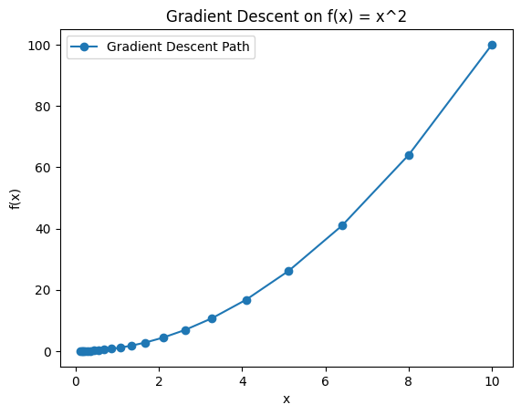

For multiple variables (like in machine learning models), you just apply this rule for each parameter.
3. Python Example – Gradient Descent on a Simple Function
Let’s minimize:
\[
f(x) = x^2
\]
Its derivative is:
\[
f'(x) = 2x
\]
import matplotlib.pyplot as plt# Function and derivativedef f(x):return x**2def f_prime(x):return2*x# Gradient descent parametersx =10# start pointlearning_rate =0.1iterations =20history = [x] # to track progress# Gradient descent loopfor i inrange(iterations): gradient = f_prime(x) x = x - learning_rate * gradient history.append(x)print(f"Iteration {i+1}: x = {x:.4f}, f(x) = {f(x):.4f}")# Plot the pathxs = [i for i in history]ys = [f(val) for val in history]plt.plot(xs, ys, "o-", label="Gradient Descent Path")plt.xlabel("x")plt.ylabel("f(x)")plt.title("Gradient Descent on f(x) = x^2")plt.legend()plt.show()
Iteration 1: x = 8.0000, f(x) = 64.0000
Iteration 2: x = 6.4000, f(x) = 40.9600
Iteration 3: x = 5.1200, f(x) = 26.2144
Iteration 4: x = 4.0960, f(x) = 16.7772
Iteration 5: x = 3.2768, f(x) = 10.7374
Iteration 6: x = 2.6214, f(x) = 6.8719
Iteration 7: x = 2.0972, f(x) = 4.3980
Iteration 8: x = 1.6777, f(x) = 2.8147
Iteration 9: x = 1.3422, f(x) = 1.8014
Iteration 10: x = 1.0737, f(x) = 1.1529
Iteration 11: x = 0.8590, f(x) = 0.7379
Iteration 12: x = 0.6872, f(x) = 0.4722
Iteration 13: x = 0.5498, f(x) = 0.3022
Iteration 14: x = 0.4398, f(x) = 0.1934
Iteration 15: x = 0.3518, f(x) = 0.1238
Iteration 16: x = 0.2815, f(x) = 0.0792
Iteration 17: x = 0.2252, f(x) = 0.0507
Iteration 18: x = 0.1801, f(x) = 0.0325
Iteration 19: x = 0.1441, f(x) = 0.0208
Iteration 20: x = 0.1153, f(x) = 0.0133

4. Output
The x values will keep moving closer to 0 (the minimum of \(x^2\)).
The plot will show how gradient descent moves step by step downhill.
Linear Regression with gradient descent
1. Problem Setup
We’ll try to fit a line:
\[
y = m x + b
\]
Given some data points \((x_i, y_i)\), we want to find the best slope \(m\) and intercept \(b\).
We’ll use the Mean Squared Error (MSE) as the loss function:
\[
J(m, b) = \frac{1}{n} \sum_{i=1}^n \big( y_i - (m x_i + b) \big)^2
\]
2. Gradient Derivatives
To minimize \(J(m, b)\), we compute the gradients: